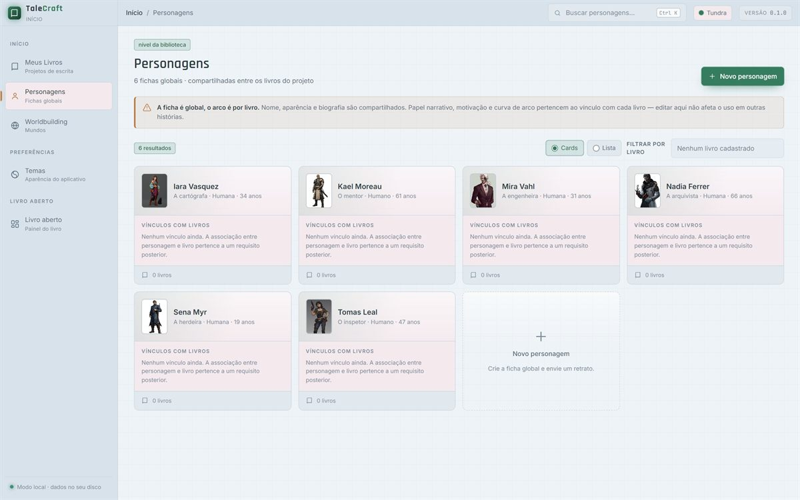
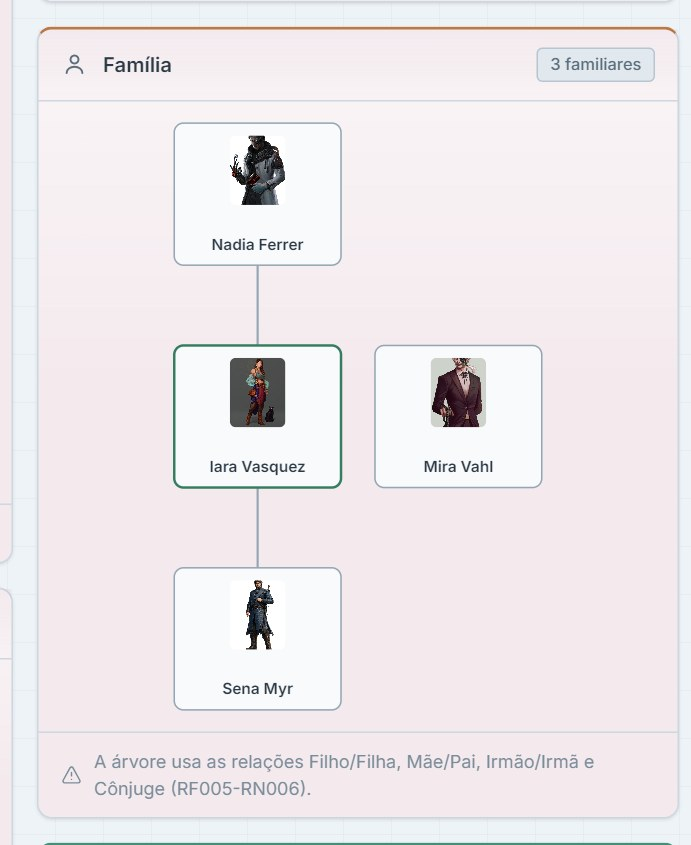
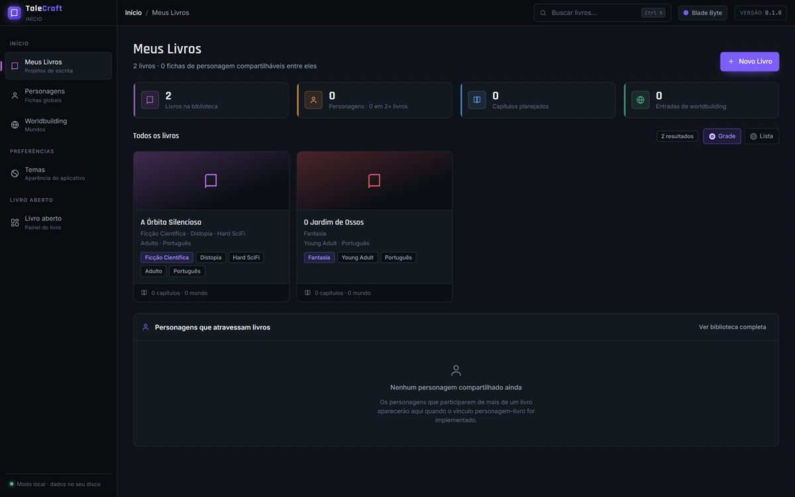
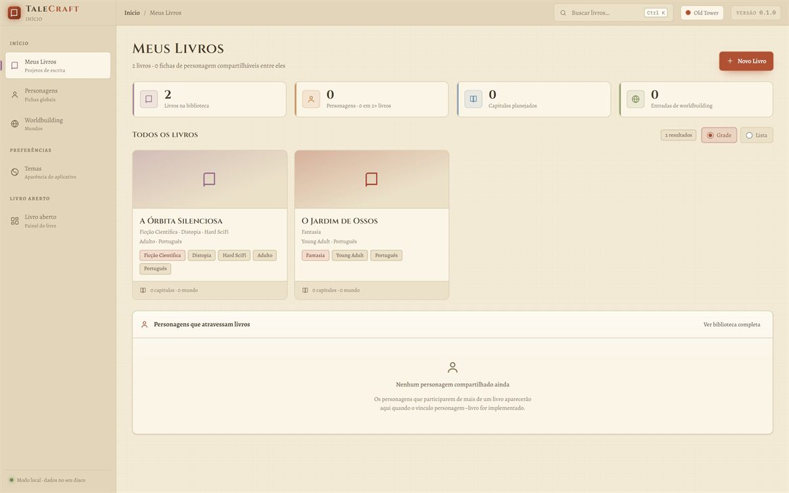
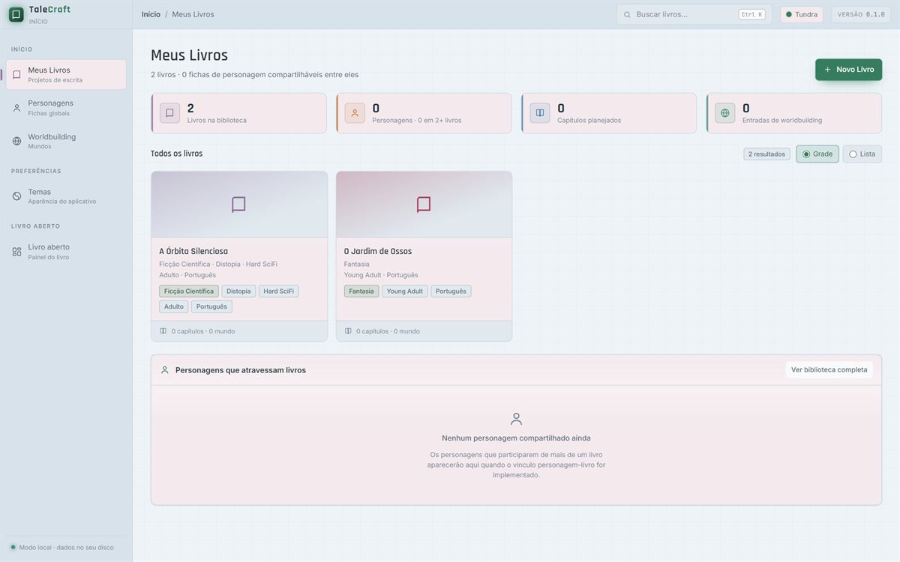

Meus Livros
A biblioteca do projeto. Capas geradas a partir do título, busca por nome e o andamento de cada livro em etapas.
Biblioteca · busca · etapasalpha em desenvolvimento · em breve
TaleCraft é o ateliê de planejamento de quem escreve ficção científica, fantasia e terror. Personagens, mundos, facções e o plano de cada livro conversam entre si — no seu computador, sem conta e sem nuvem.

captura real do aplicativo1600 × 1000
O que é
Cada livro puxa um fio: o personagem que sustenta a trama, o mundo que explica as regras, a facção que cria o conflito. O TaleCraft guarda esses fios no mesmo lugar e mostra as ligações entre eles.
Recursos
Módulos que compartilham os mesmos dados. Um personagem cadastrado uma vez aparece na ficha do livro, na árvore familiar e nas facções a que pertence.
A biblioteca do projeto. Capas geradas a partir do título, busca por nome e o andamento de cada livro em etapas.
Biblioteca · busca · etapasRetrato, personalidade, forças, fraquezas, interesses e biografia. Uma ficha completa para cada figura do elenco.
Retratos · personalidade · biografiaDez tipos de vínculo — de aliança a rivalidade, de mentor a filho. A árvore familiar se desenha a partir do que já foi cadastrado.
Vínculos · genealogia · navegaçãoLocalidades, povos, artefatos, armas, eventos e sistemas. Seis tipos de entrada por mundo, todas pesquisáveis.
Mundos · entradas · sistemasIdeologia, objetivos, líderes e território. Associe personagens à facção com o papel de cada um — líder, membro, informante.
Organizações · líderes · membrosBlade Byte, Old Tower e Tundra. Cada tema muda superfícies, tipografia e acentos — sem tocar no conteúdo. Outros temas estão planejados.
Blade Byte · Old Tower · Tundra · em breve, maisPlanejado · Análise
Quando os capítulos estiverem ligados ao livro, a análise ganha dois gráficos para conferir o ritmo da história antes de escrever a próxima cena. Os dois já estão no roadmap.
A curva de arco de cada personagem e do livro inteiro, capítulo a capítulo — para ver onde a história sobe, estabiliza ou perde o fio.
Duas linhas por capítulo: o quanto acontece e quanta tensão se acumula. O contraste mostra cenas paradas demais ou reviravoltas empilhadas.
Relações
Cadastre o vínculo entre duas pessoas e o TaleCraft mantém os dois lados coerentes: quem é filho também aparece como pai ou mãe, e a árvore familiar se organiza sozinha.

Telas
Capturas reais do TaleCraft, feitas com um projeto de demonstração. Clique em qualquer tela para ampliar.
Temas do aplicativo
O tema muda a atmosfera do app, não o conteúdo. A escolha fica salva no computador e vale para a próxima vez que você abrir o TaleCraft. Outros temas estão planejados.

Escuro e técnico, com acentos neon por módulo. O padrão do aplicativo.

Pergaminho claro, tinta sépia e acentos de telha e oliva. Para fantasia.

Claro e frio, com painéis de vinho suave e botões em verde profundo.
Esta página tem tema próprio, inspirado em papel e tinta — não é uma das opções do aplicativo.
Stack
O TaleCraft é um aplicativo desktop: a interface roda no WebView do próprio Windows e os dados ficam num banco SQLite no seu computador.
O banco de dados pode ser apontado para outra pasta pela variável
TALECRAFT_DADOS — útil para backups e para manter projetos separados.
Roadmap
Entrega atual
01A base do aplicativo está funcionando: biblioteca, fichas de personagem, relações, mundos, facções e temas. O próximo passo é fechar os vínculos entre o livro e o restante do projeto.
Builds públicas para Windows, com assinatura de código e atualização.
Ligar personagens, mundos e facções a cada livro, com progresso real por projeto.
Análise do projeto e exportação dos dados do livro em formatos abertos.
Guia das telas, do fluxo de planejamento e do formato de dados.
Download
As builds públicas ainda não estão disponíveis. O repositório de releases já está aberto — quando o instalador sair, ele aparece por lá.
O aplicativo desktop é e sempre será 100% gratuito.